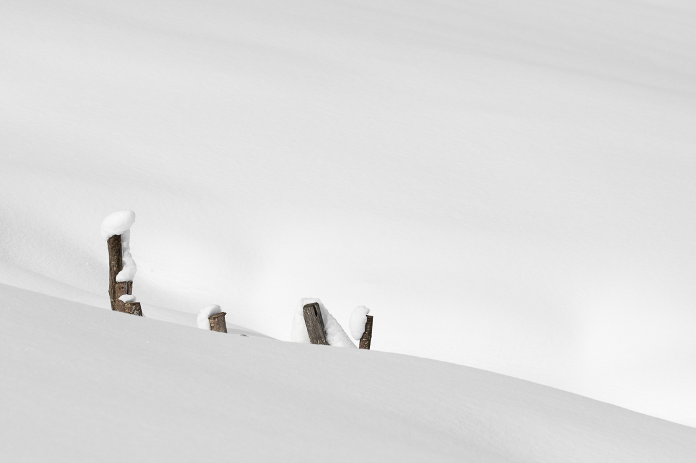
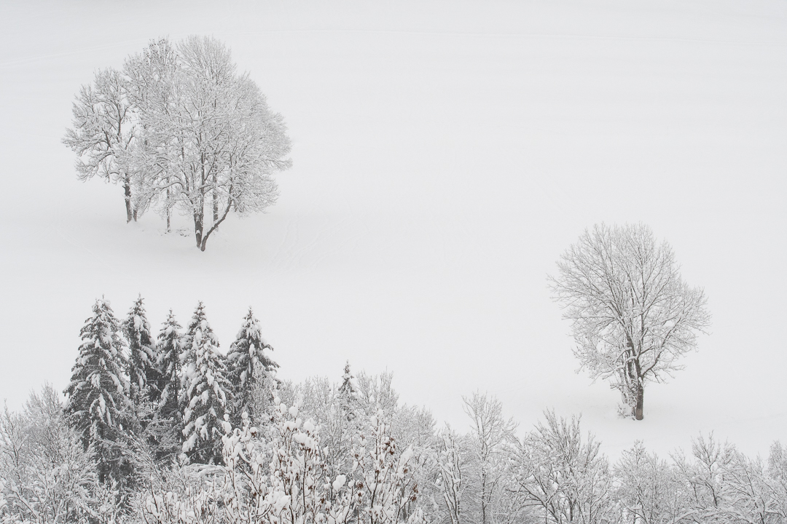
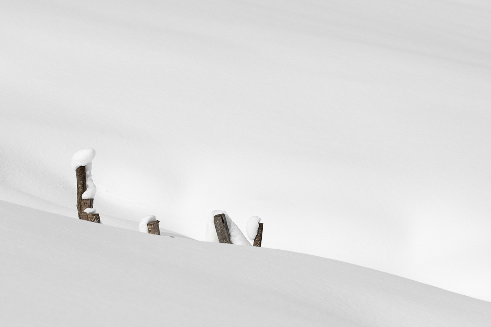
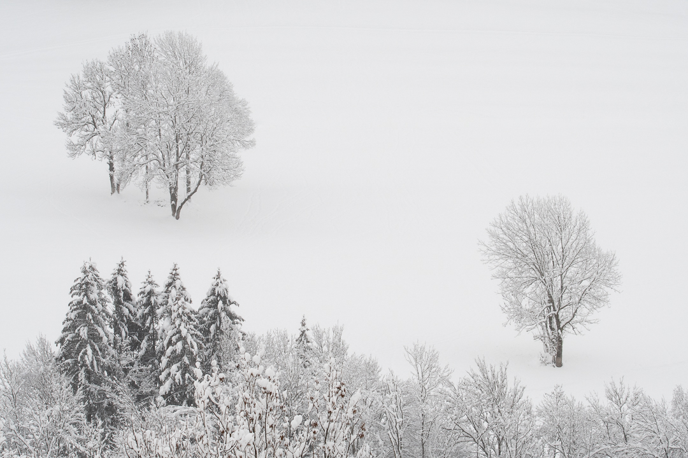

I grew up in boring old Wisconsin, and I spent the first 18 years of my life waiting to get out. My dreams were too big for cows and cornfields. I was ready--had been for years--to escape, to see the ends of the earth through the end of a lens. I wanted mountains, icebergs, jungles. Pulled towards extremes, I never saw this lumpy wheat-swamp as a destination.
I think I do now.
Simplest Forms is a years-long exploration of the subtleties I failed to notice for so long. Nothing in Wisconsin is grand. If any majesty exists among these muddy hills, I have not yet photographed it. I seek instead the character of the land, the muted idiosyncrasies I did not see growing up.
Back for the summer, I entered Wisconsin not as a long-time resident but as a visitor. I found inspiration in great writers who remove themselves from the context of life, who seem to view the world from a thousand miles away and write about human nature as if it is alien. While I strive for intimacy in my work, for a deep connection to the natural world, I utilise the curiosity and nondismissive willingness that comes from removal to find beauty in the mundane.
The great struggle in creating Simplest Forms was not in finding extraordinary subjects but in finding extraordinary ways to photograph. I have walked past the same stand of tall grasses--the same weeds, essentially--hundreds of times; how do I see them anew? How do I capture with a fresh and novel perspective while maintaining my intimate familiarity with the land?
The images in Simplest Forms are raw and poetic vignettes of the land of my youth. They are deeply rooted in my past, but owe their existance to my expatriation. This project would not exist if had never left Wisconsin just as it would not exist if I grew up somewhere else; it was born from this dichotomy of intimacy and removal. Above all, it allowed me to finally see what I had missed for so long: the quiet beauty of Wisconsin's small nature.
 


